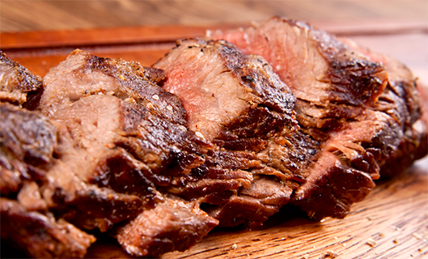

Delícias na Cozinha

As melhores receitas para você!
As melhores receitas para você!
Tempere os cubos de carne com sal e pimenta a gosto e asse por 30 minutos a 200 graus...
Tempere o filé de tilápia com limão, alho e sal a gosto e grelhe por 15 minutos em uma frigideira com azeite de oliva em fogo baixo...
Cozinhe o macarrão em água com uma pitada de sal a gosto, após cozido adicione o molho...
Misture tudo até obter uma massa homogênea e leve ao forno por 30 minutos...